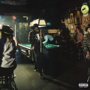
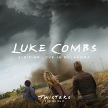

Pop Music
Pop music continues to be dominated by Sabrina Carpenter and her new studio album 'Short n' Sweet'
- Song 1: “Espresso” by Sabrina Carpenter
Current Chart Positon: #3

- Song 2: "Please Please Please" by Sabrina Carpenter
Current Chart Postion: #3
- Song 3: “Taste” by Sabrina Carpenter
Current Chart Position: #5
Hip-Hop Music
Like Sabrina Carpenter, Kendrick Lamar is also having a year of prominence within his respective field of Hip-Hop.
- Song 1: “Not Like Us” by Kendrick Lamar
Current Chart Postion: #10

- Song 2: “Like That” by Future, Metro Boomin & Kendrick Lamar
Current Chart Position: #27

- Song 3: “TGIF” by Glorilla
Current Chart Position: #35
Country Music
Country music is making a comeback with powerful guitar riffs and energetic performances. Top hits of 2024 include:
- Song 1: “A Bar Song (Tipsy)” by Shaboozey
Current Chart Position: #1

- Song 2: “I Had Some Help” by Post Malone Featuring Morgan Wallen
Current Chart Postition: #2

- Song 3: “Ain't No Love in Oklahoma” by Luke Combs
Current Chart Position: #14

Alternative Music
Alternative music adds to the sonic diversity of 2024 with its eccentricity. Top hits of 2024 include:
- Song 1: “Birds of a Feather” by Billie Eilish
Current Chart Position: #7

- Song 2: “Good Luck, Babe!” by Chappell Roan
Current Chart Position: #8
- Song 3: “Too Sweet” by Hozier
Currrent Chart Position: #12